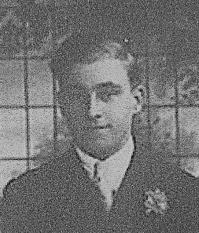

James Alfred William Tutt 1908 - c1988
[ Home ] | [ Calendar ] | [ Surnames Index ] | [ Census Index ] | [ Family History ]A waterwork's lab and the child of James Tutt (a fitter) and Clara Ansley, James Tutt, the second cousin once-removed on the father's side of Nigel Horne, was born in Ramsgate, Kent, England on Jan 22, 19081,2,3 and baptized there at Holy Trinity on Apr 18, 1908. He married Marjorie Clover in Thanet, Kent, England around Nov 19514.
During his life, he was living at 6 Pleasant Place, Margate, Kent on Apr 2, 19116 and on Sep 29, 19391 (when he was living with his); and at 4 Church Road, Margate, Kent in 19555.
He died c. May 1988 in Brent, London, England2.
Parents
- James Richard Edmund was born on Dec 7, 1877
- Clara was born on Aug 28, 1879
Citations
- 1939 Register - Findmypast (was recorded at this address)
- England & Wales deaths 1837-2007 - Findmypast
- Kent, Canterbury Archdeaconry baptisms 1538-1912 - Findmypast
- England & Wales marriages 1837-2008 - Findmypast
- 1955 Kelly's Thanet Directory
- 1911 Census for England & Wales - Findmypast (was age 3 and the son of the head of the household)
Media
1955 Kelly's Thanet Directory

James Alfred William Tutt

1911 England, Wales & Scotland Census Transcription - GBC-1911-RG14-04494-0429-1
Kent, Canterbury Archdeaconry baptisms 1538-1912 - GBPRS/CANT/B/96753702
England & Wales deaths 1837-2007 - BMD/D/1988/6/77028768
England & Wales births 1837-2006 - BMD/B/1908/1/AZ/000622/122
1939 Register Transcription - TNA-R39-1755-1755G-002-13
England & Wales marriages 1837-2008 Transcription - BMD-M-1951-4-AZ-001214-123
England, Births & Baptisms 1538-1975 Transcription - R_884614500
England Births & Baptisms 1538-1975 - R_884820037
Family Tree

Generated by ged2site. Last updated on Jun 11, 2024